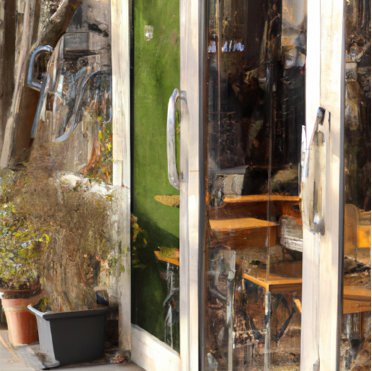
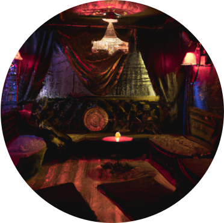

Horaire
Semaine 7h30-20h
Week-end 9h - 00h
Cabaret débute de 20h/22h - 00h(l'heure varie de la pièce ou les pièces présentés
Menu
La spécialité du restaurant est le eyecohol, une bouteille de vodka
venant tout droit de Suisse.
Diverses boissons avec ou sans alcool vous seront proposées durant la journée passant d’un petit café de Vienne à un petit cocktail pour se détendre. Des goûts faisant voyager vos papilles et des théâtres qui vous feront briller vos pupilles. Tout cela dégusté autour de bons tapas cuisinés par nos soins.
PINEAPPLE EXPRESS
Gin Boxer, cordiale d’ananas et de sureau, feuilles de kaffir, jus de citron vert, tonic water,fruit frais pétillant
LE GRAND BLEU
Pisco cavaredo, Mastiha Skinos, violette, jus de citron vert, orange bitters, écume d’agrumes, frais, acide, fruité
WILLIAM ShAKES PEAR
Calcados christian drouin, Chinotto, jus de poir clarifié, tonka, sirop d’érable salé, jus de citron jaune frais, sassy poire le Vertueux. Frais, fruité, pétillant
Evenement
Cabaret ou poseur
Poseur et artiste de cabaret seront là pour vous servir. Mettant leurs corps et leur prestation à disposition pour vous montrer des visuels qui resteront gravés dans votre mémoire. Alors, prenez vos crayons, mettez-vous à une table et laissez votre côté artistique prendre les devants et passer un moment inoubliable.
anthonyo Valeska
Jeune poseur de 24ans se mettant en valeur afin de donner un résultat à des esquisses et des travaux que VOUS allez réaliser. Présent le lundi, le mercredi et le jeudi de 14h – 17h
Le cabaret
La troupe « des enfants des souvenirs » débarque dans nos villes, spectacle magique des prestations à couper le souffle et une chorégraphie digne des grandes scènes, nous avons l’honneur de les voir ce week-end devant nos rideaux avec un show qui restera gravé dans nos souvenirs.
Lieu
Bd de Pérolles 65 1700 fribourg
 